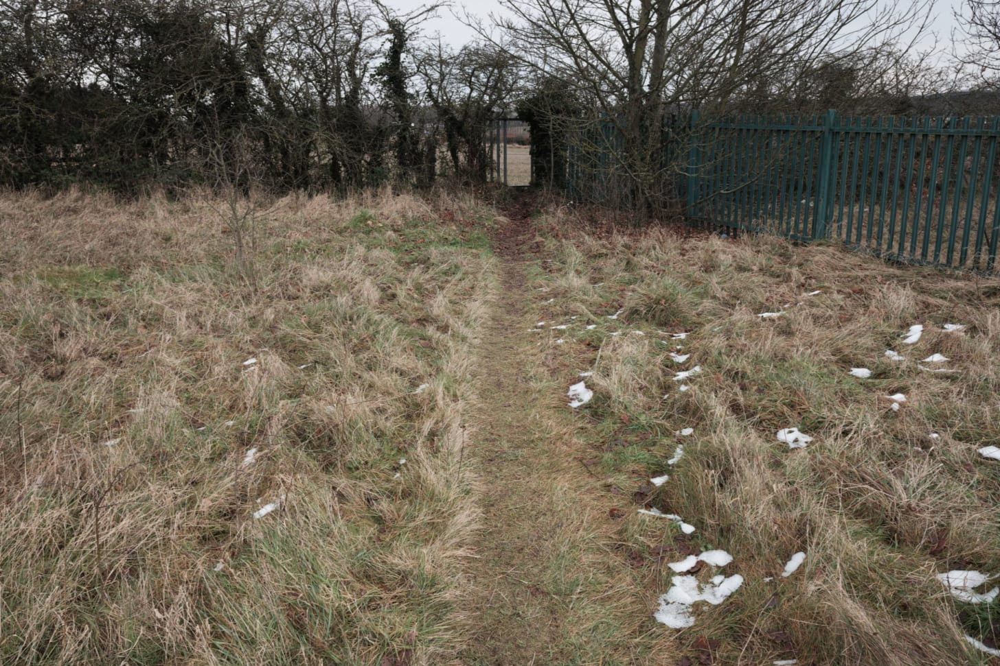
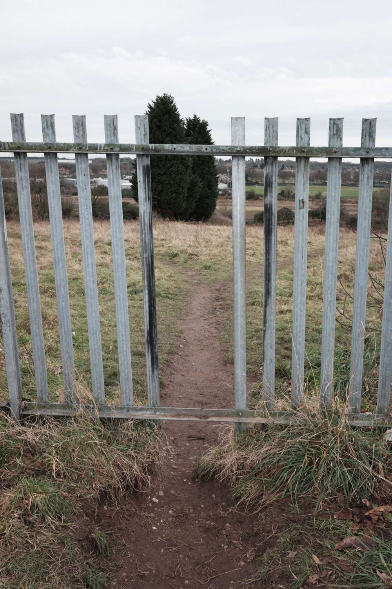
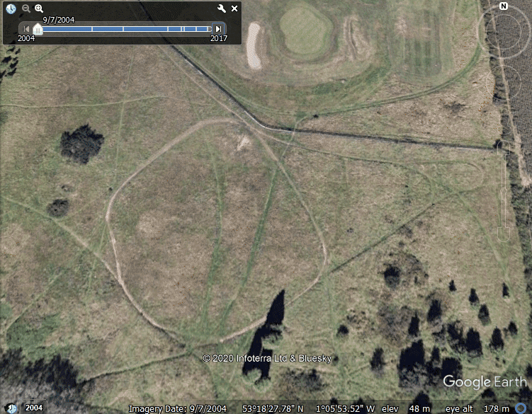
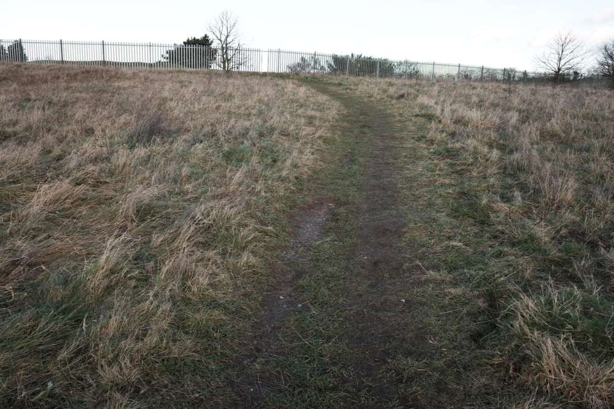
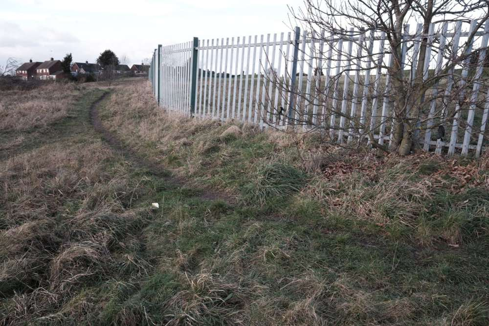
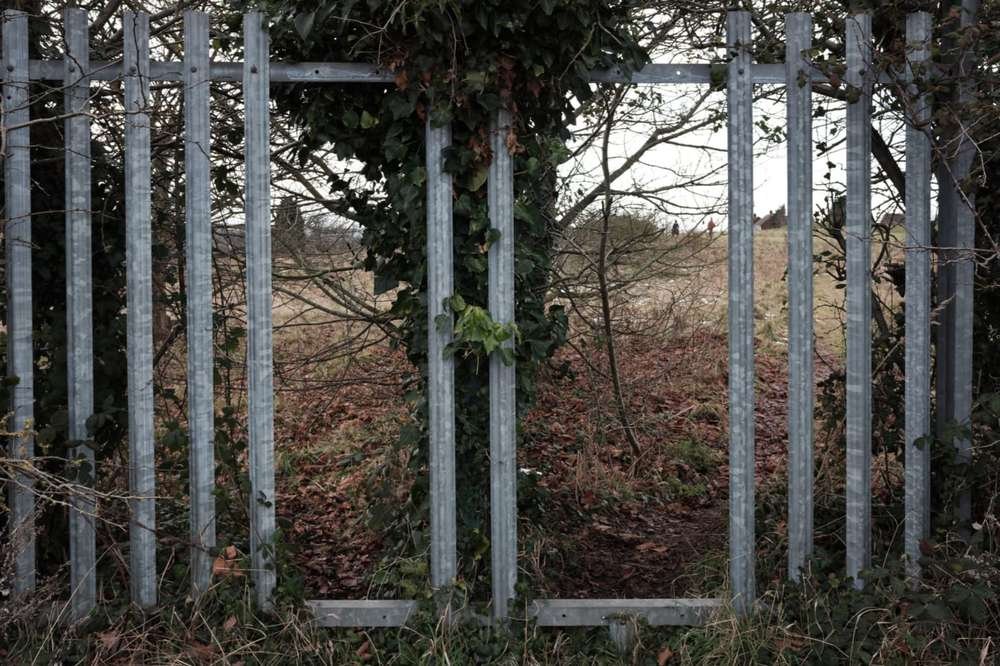
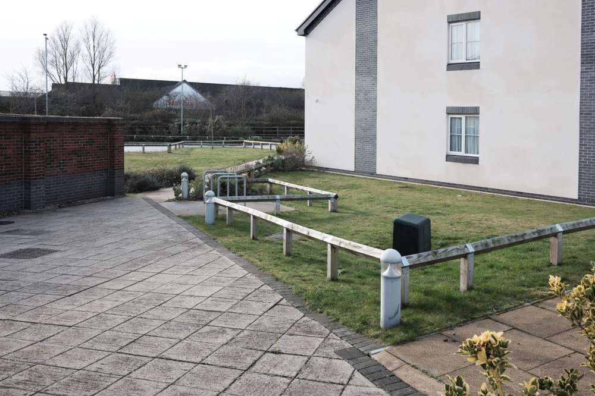

Rich's digital garden
When desire confronts enclosure
I point out a gap in the boundary. The start of a dirt path between ivy-covered trees that proceeds onto the golf course. A hesitant senior in a blue polyester raincoat had approached us for directions. ‘I know it's the long way round,’ she states. ‘I just want a walk. I normally go through the golf course but the gates are locked.’ When bored her routine is to carry out a meandering walk to the co-op via the course, she explained. However, the course has been officially shut since the national lockdown. She appeared happy in the knowledge that her routine walk would continue albeit via an unauthorised desire path.
Desire paths, or the broader name desire lines,are"paths & tracks made over time by the wishes & feet of walkers, especially those paths that run contrary to design or planning". Other, more extravagant, names include "cow paths, pirate paths, social trails, kemonomichi (beast trails), chemins de l’âne (donkey paths), and Olifantenpad (elephant trails)". These unofficial and unplanned paths are evident in the edgelands. Places which are overlooked by urban planners, who omit these paths, allowing them to develop and mature. Under the circumstances, they have become useful tools to circumvent physical obstacles and allow for easier access to the countryside through urban interfacial spaces.
{kind=link}
Articles often emphasize desire paths as passive resistance to urban planning. Usually demonstrated with images of dictated pathways and shortcut desire paths splitting away and returning to the original path. Similar to images found in Jan Dirk van der Burg's Olifantenpaadjes. What happens when these acts of passive resistance become active instead?
Towards the bottom of the golf course is a terrain vague territory, a leftover from the development of the course, separated by capped palisade fencing. The site is a no man's land of tall grasses situated between a housing estate and the green. It's here that desire paths become more pronounced as they proceed through the fencing, converging on absent railings.
The busiest route through the fencing. Notice the erosion.
{kind=link}
The vandalised fence is a result of a desireto walk between territories. Perhaps a desire path existed before the fence. Regardless, google earth images from 2004 reveal the same fence amidst converging desire paths leading to the same gaps that exist today. In those seventeen years, there has not been a successful, if any, cordon or intervention. However, the passage of time and neglect has allowed routine desires to become established in the land and the lives of users to the point where a fence is not going to stop an elderly pensioner from her leisured walk to the co-op.
The site from 2004-2017. The golf course and fence are at the top of the image, while the bottom shows the desire paths within the terrain vague.
{kind=link}
From the above gif, as time passes the paths distort and change. Some lines are short-lived while others move, altering course, but always in the direction of the gap in the fence as the below images demonstrate.
Desire path leading to the gap in the fencing. Taken from within the terrain vague and looking towards the golf course.
{kind=link}
Desire path in the terrain vague that goes from the gap in the fence to the housing estate.
{kind=link}
Another, more interesting, passage in the fencing is found in the corner at a T section of fencing. Rather than being uninterrupted like the other gap, this one requires the user to proceed to the adjacent agrarian field. From the field boundary, the user is greeted by a french bay door arrangement from which they can either return to the previous territory or progress to the other. Three territories can be traversed via this device, the ingenuity of which indicates a purposeful desire.
French bay window approach.
{kind=link}
These desire paths demonstrate the desire of a community’s will to roam without hindrance. Manifested in a collective footfall imprinting the earth with paths and the physical manipulation of obstacles, the latter being a transgression asserting lawlessness in the unwatched edgelands. Both are forms of resistance to authority and enclosure, culminating in an intriguing space outside of the conventional urban circuit. Additionally, the passageways enable the ability to freely roam, access open spaces and reach the more prominent countryside during a time when the edgelands have never been more important for exercise and leisure.
Further reading
Extra
I have been mulling over this image taken from the Chesterfield Canal towpath. Despite the historic canal being a site of leisure with fisherman, cyclists, and walkers on its towpath, there are new urban developments encroaching, particularly on the Shireoaks section. It's a juxtaposition of the idle canal and the fast-paced modern world, a reminder of our constant reimagining of space, especially in the edgelands.
{kind=link}
Bookmarks
- Photographs From the Quiet Inauguration - sombre monochrome images from the day.
- has social media hurt my photography? - Matt Day discusses Instagram and photography.
SubscribeInstagram
This article is from my newsletter. Consider subscribing, it's free and weekly.
Created
24/01/2021
Topics
Roadside Picnic
Desire Paths
Psychogeography
Urban Spaces
Walking